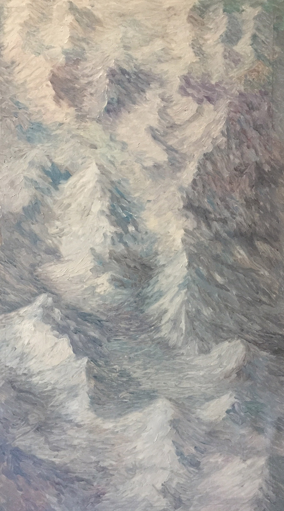
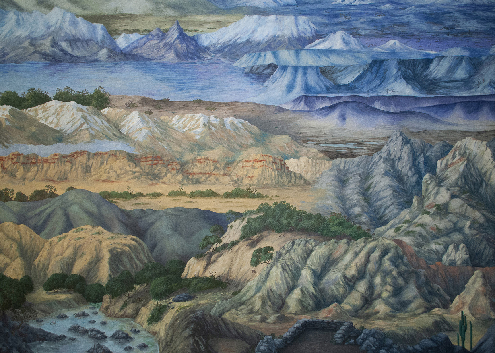
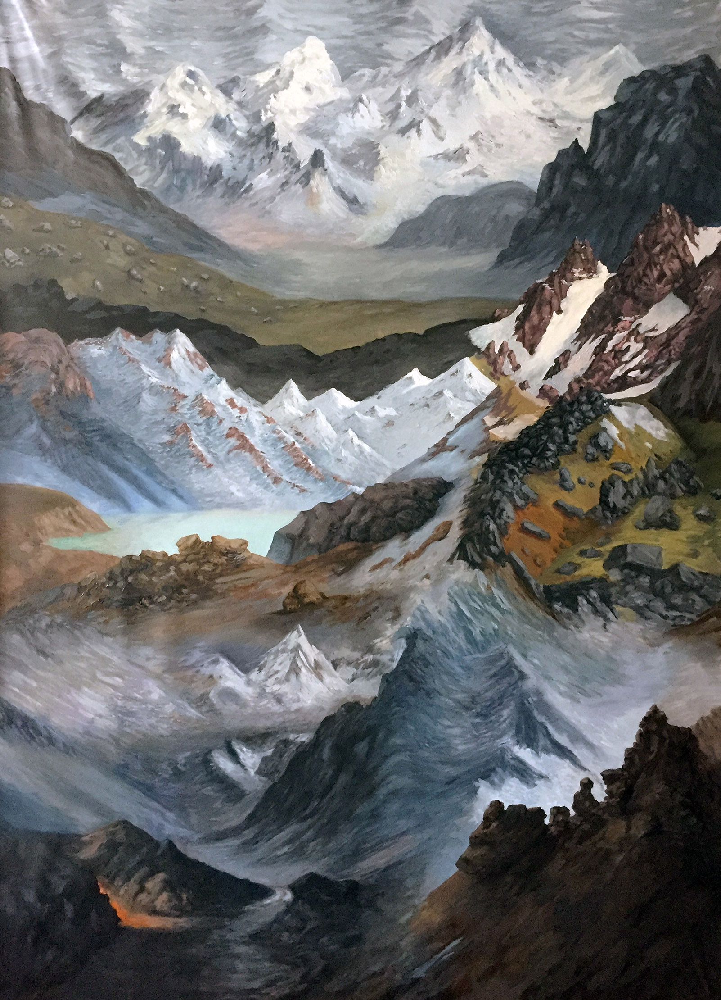
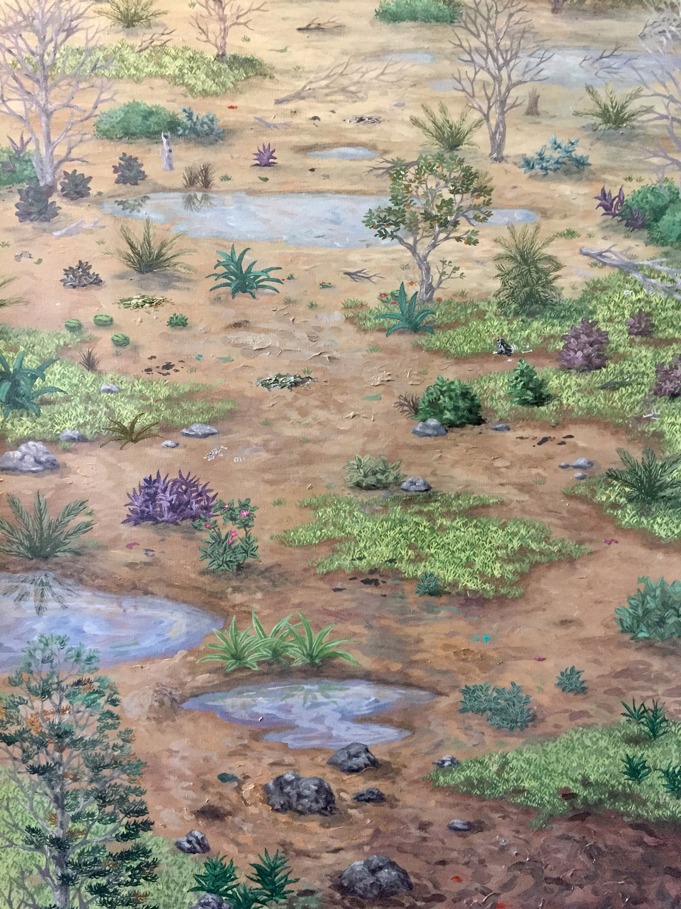
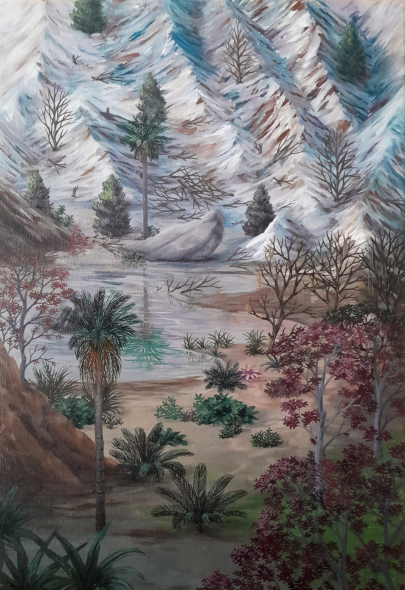
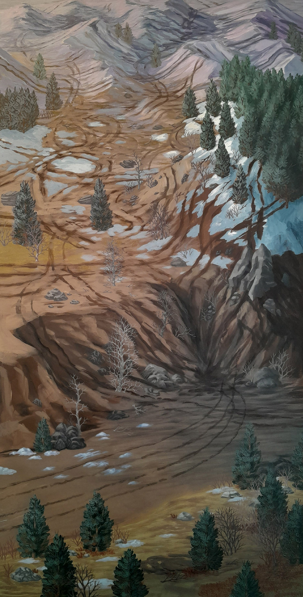
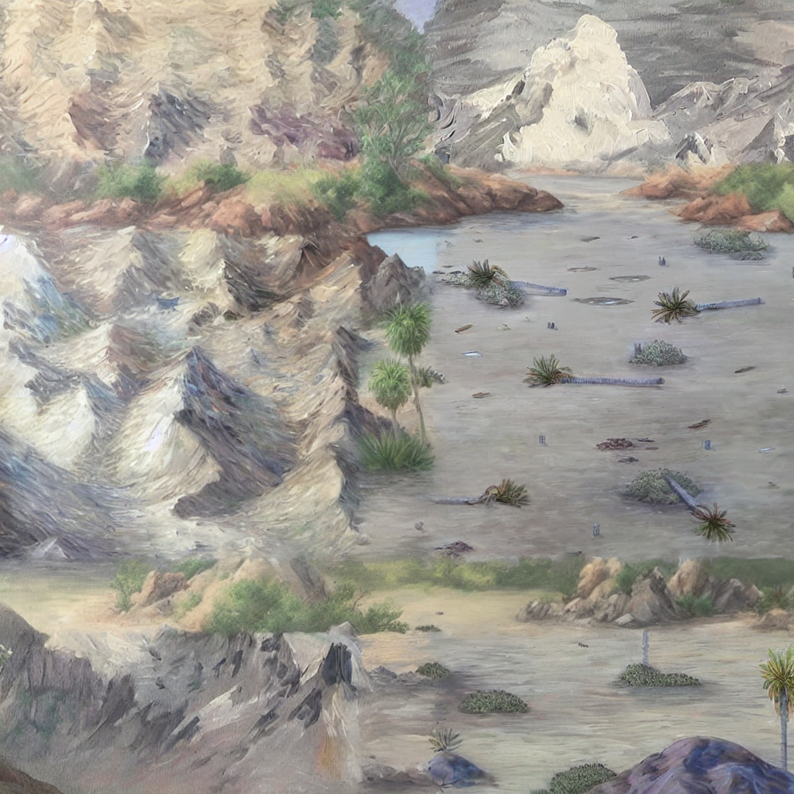
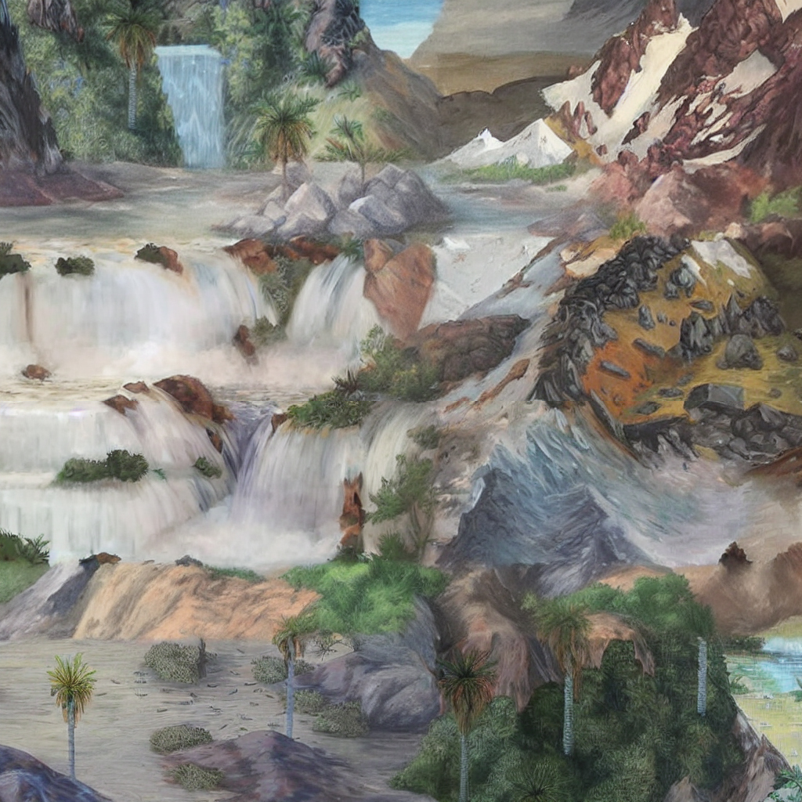
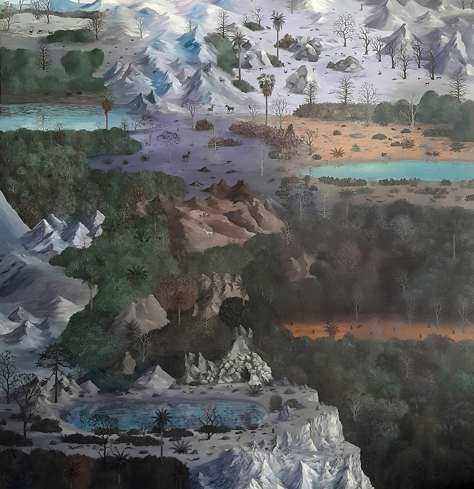
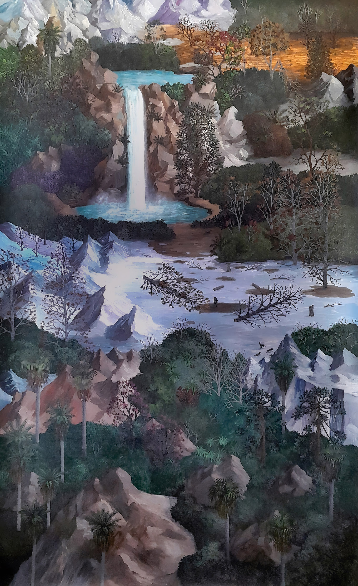

Paisaje Infinito
Paisaje Infinito es una serie de pinturas que explora la idea de continuidad y expansión del paisaje más allá de los límites del cuadro. Las imágenes se construyen a partir de fragmentos, repeticiones y variaciones, dando lugar a territorios sin horizonte fijo ni punto de vista estable.
El paisaje aparece como una estructura abierta, en permanente construcción, donde conviven observación, tradición pictórica e invención. La serie se desarrolla en pinturas y en un video que propone un desplazamiento continuo a través de estos fragmentos.









